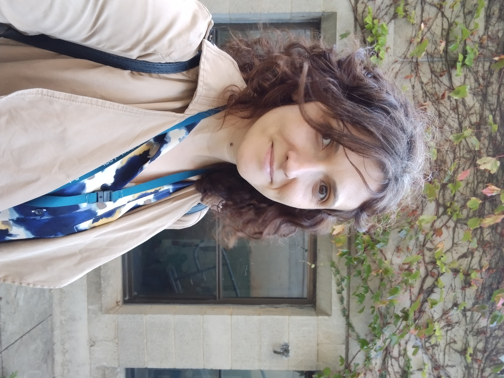

Home
I’m a philosopher of science in the School of Politics, Philosophy, and Area Studies at the University of East Anglia. My research focuses on issues related to modelling and measurement in the social sciences, the epistemology of artificial intelligence, and mechanistic explanation in biology and cognitive science.
My previous positions were at Technische Universität Berlin, where I was a Postdoc at the Institut für Philosophie, Literatur, Wissenschafts und Techniksgeschichte at the University of Copenhagen where I was part of the project: Living Machines? Philosophical perspectives on the engineering approach in biology, at the Center for Philosophy of Natural and Social Sciences at the London School of Economics, and at the Center for Philosophy of Science at the University of Pittsburgh. I did my PhD on the structure of explanations in cognitive neuroscience at the University of East Anglia.
Work
My research is, for the most part, in the philosophy of biology and cognitive neuroscience. In my work I take a methodological approach which I think can better capture the interactions between the different facets of scientific knowledge: exploration, prediction, concept formation and explanation.
I believe that fostering a critical understanding of scientific method is part of the appeal and usefulness of philosophy. I am also interested in how current cognitive neuroscientific research can inform our approach to education within and outside academia.
I try to think about the broader context of scientific research, specifically the ethical, political and cultural implications of the way in which neurobiological research is used in multidisciplinary projects as well as in medical practice.
Info
This site contains information about my papers, teaching, work in progress, the conferences and workshops in which I am involved. For more information, you can consult my resume or contact me at mariaserban.org@gmail.com